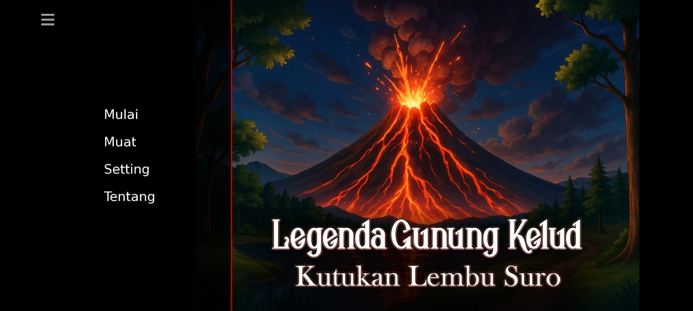

Semester 2

Perancangan Game Interaktif Berbasis Cerita Rakyat:
Proyek ini merupakan pengembangan game *Visual Novel* yang mengadaptasi legenda lokal "Lembu Suro & Gunung Kelud". Permainan dirancang dengan pendekatan naratif interaktif, di mana setiap keputusan pemain menentukan alur cerita (*branching narrative*).
Fitur & Fitur Mekanik Game:
- Interaktivitas Naratif: Sistem dialog bercabang untuk meningkatkan keterlibatan emosional pemain.
- Mekanik Teka-Teki (Puzzle Solving): Integrasi mini-game teka-teki logika sebagai syarat progresivitas alur cerita.
- Asset Design & Prototyping: Penyusunan jalan cerita, ilustrasi karakter, background art, serta pengujian antarmuka pemain (*UI/UX*).
Produksi Video Animasi Edukatif 2D:
Proyek animasi 2D ini mengusung pesan sosial tentang pentingnya toleransi, keberagaman budaya, dan sikap saling menghargai antar-umat beragama dalam kehidupan bermasyarakat.
Pendekatan Visual & Produksi:
- Stilasi Karakter: Mengadopsi referensi gaya visual eksplanatoris pop-muda (serupa dengan gaya kanal edukasi *Kok Bisa?*) untuk menyampaikan materi yang ramah dan mudah dipahami.
- Alur Produksi: Terlibat dalam tahapan *storyboarding*, perancangan aset karakter digital, pergerakan animasi (*motion & rigging*), hingga *audio synchronization*.